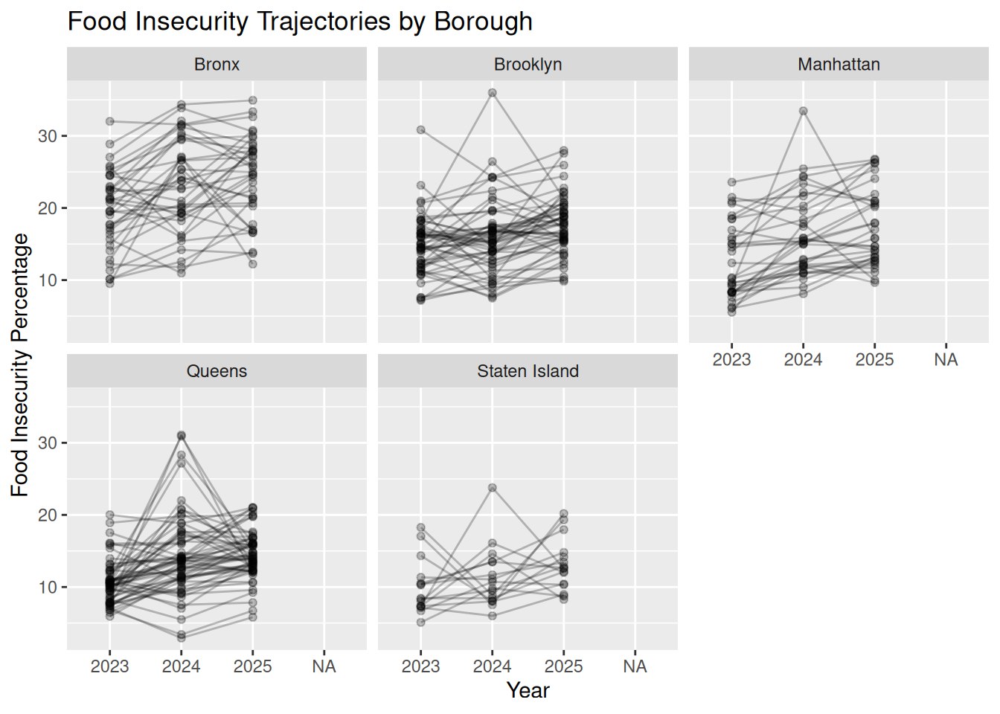
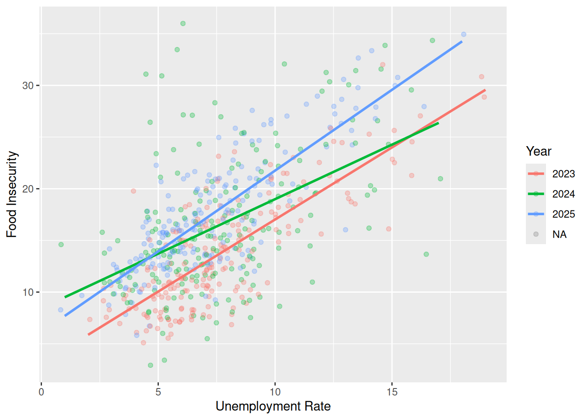
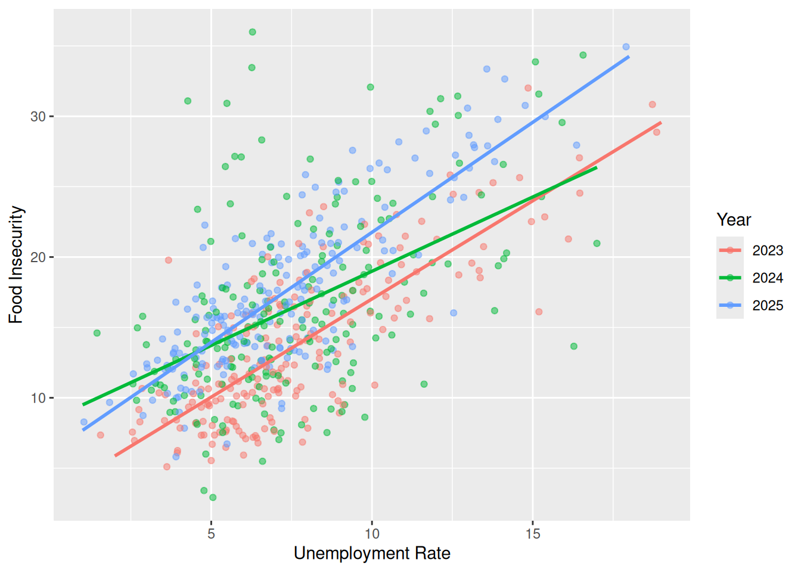
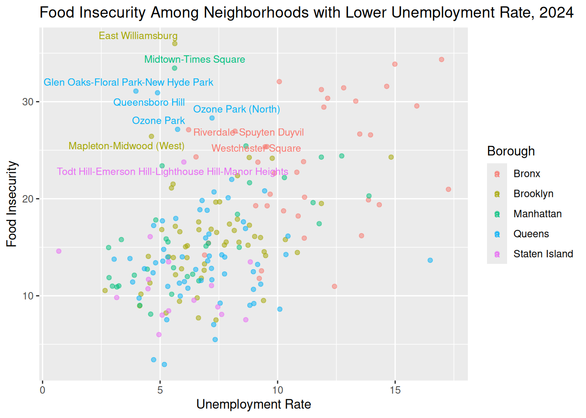
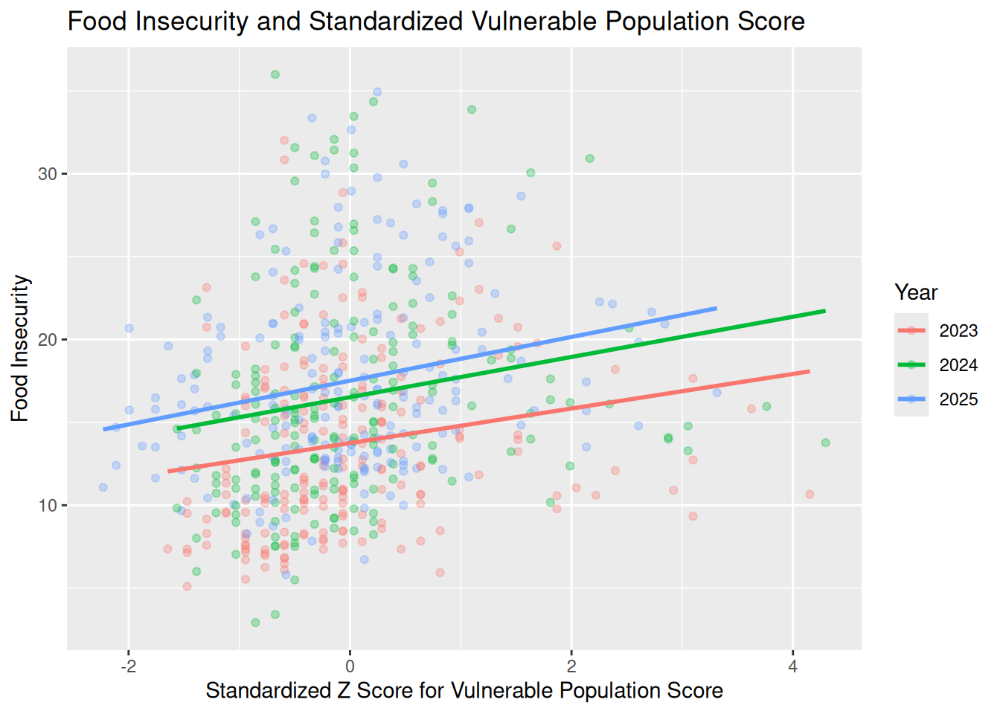
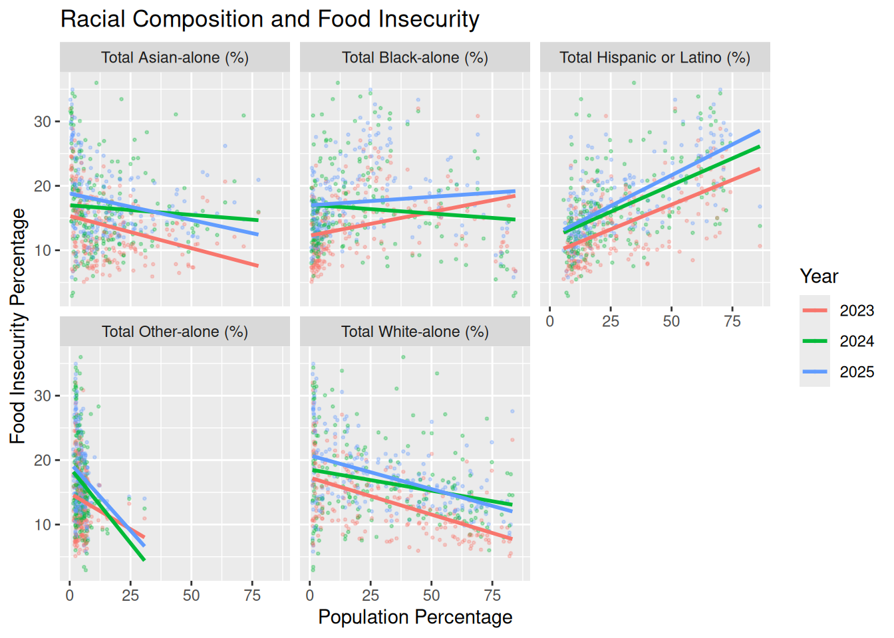
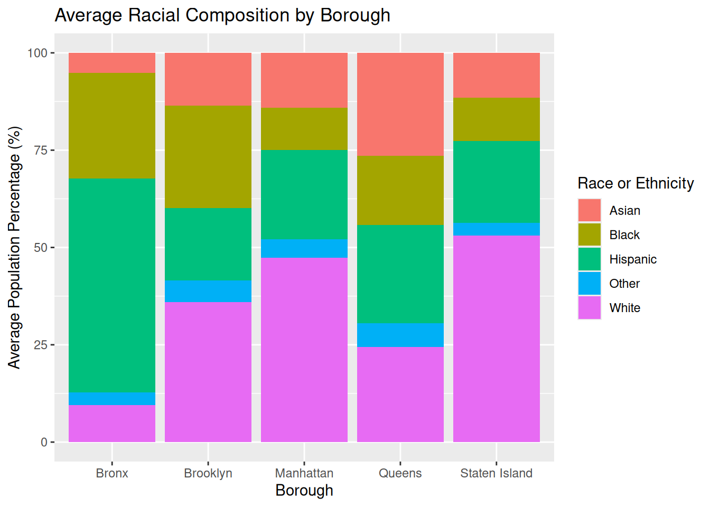
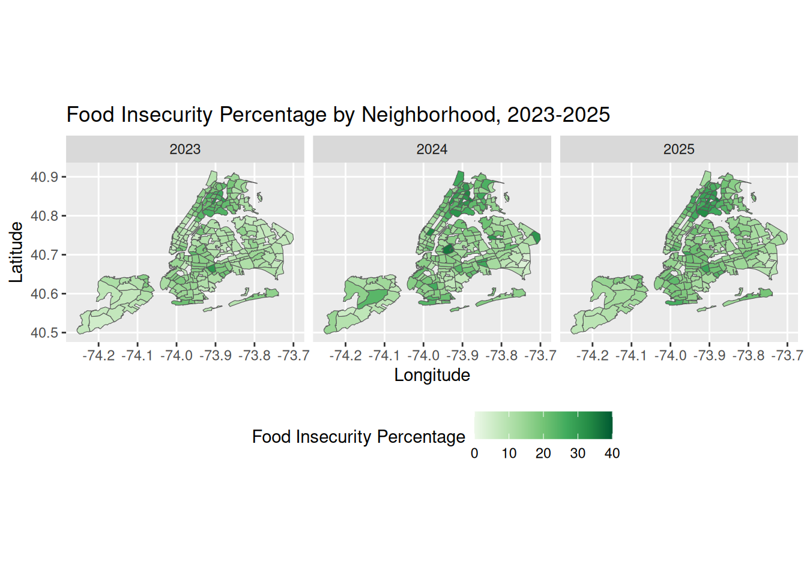
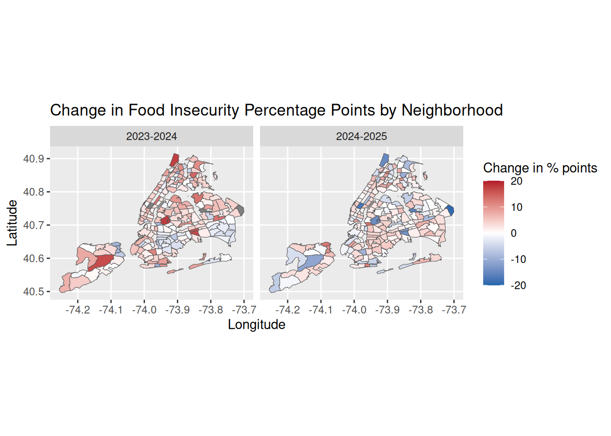

This project studies food insecurity percentage (estimated percentage of the population that is food insecure) across NYC Neighborhood Tabulation Areas from 2023 to 2025, focusing specifically on changes over time, differences between boroughs, and possible relationships with unemployment, vulnerable population scores, and racial composition. I chose this project partly because I used to be a food blogger, but more seriously because I became interested in the gap between food availability and access after attending an NYC Open Data Week event on food distribution in New York City. I learned that 90% of Americans live within a 10min drive of a Walmart. Although Walmart doesn’t have a strong presence in New York, other large grocery chains, such as Trader Joe’s and Whole Foods, have multiple locations across the city. New York also holds one of the nation’s largest food distribution centers at Hunts Point in the Bronx, which is geographically close to many other parts of the city that are yet called “food dessert,” like Harlem. Therefore, I want to develop a clearer picture of how food insecurity is distributed across New York City, what factors may be associated with it, and whether neighborhoods with high food insecurity percentage have improved over time.
10.2 Data
library(tidyverse)library(sf)library(ggridges)library(forcats)library(redav)library(tidycensus)library(knitr)library(scales)library(patchwork)library(ggrepel)food <-read.csv("data/Food/Food.csv")Neighborhood <-read.csv("data/Food/2020_Neighborhood_Tabulation_Areas_(NTAs)_20260422.csv")data <- Neighborhood |>st_as_sf(wkt ="the_geom") |>rename(geometry = the_geom) |>left_join(food, by =c("NTA2020"="Neighborhood.Tabulation.Area.NTA.")) |>mutate(food_insecurity =parse_number(Food.Insecure.Percentage), unemployment_rate =parse_number(Unemployment.Rate), Year =as.factor(Year),Supply.Gap..lbs.. =parse_number(Supply.Gap..lbs..),unemployment_rate =case_when( Year %in%c("2023", "2024") ~ unemployment_rate *100, Year =="2025"~floor(unemployment_rate))) |>select(-c(`BoroCode`, `CountyFIPS`, `CDTA2020`, `NTAAbbrev`, `CDTAName`, 13, `Food.Insecure.Percentage`, `Unemployment.Rate`)) data |>group_by(Year) |>summarize(min_vulnerablescore =min(Vulnerable.Population.Score),mean_vulnerablescore =mean(Vulnerable.Population.Score),median_vulnerablescore =median(Vulnerable.Population.Score),max_vulnerablescore =max(Vulnerable.Population.Score))
Simple feature collection with 4 features and 5 fields
Geometry type: MULTIPOLYGON
Dimension: XY
Bounding box: xmin: -74.25559 ymin: 40.49613 xmax: -73.70001 ymax: 40.91553
CRS: NA
# A tibble: 4 × 6
Year min_vulnerablescore mean_vulnerablescore median_vulnerablescore
<fct> <dbl> <dbl> <dbl>
1 2023 0.06 0.154 0.14
2 2024 0.07 0.158 0.15
3 2025 0.34 0.529 0.53
4 <NA> NA NA NA
# ℹ 2 more variables: max_vulnerablescore <dbl>, geometry <MULTIPOLYGON>
data <- data |>group_by(Year) |>mutate(scaled_vulpop = (Vulnerable.Population.Score-mean(Vulnerable.Population.Score))/sd(Vulnerable.Population.Score)) |>ungroup()pl_2020 <-load_variables(2020, "pl", cache = T)raw_race <-get_decennial(geography ="tract",variables =c(`Total`="P1_001N",`Hispanic or Latino`="P2_002N",`Black-alone`="P2_006N",`Asian-alone`="P2_008N",`White-alone`="P2_005N"),state='NY',county =c('New York', 'Kings', 'Bronx', 'Richmond','Queens'),geometry = T,year =2020,output ="wide")race <- raw_race |>mutate(`Hispanic or Latino (%)`=`Hispanic or Latino`/`Total`,`Black-alone (%)`=`Black-alone`/`Total`,`Asian-alone (%)`=`Asian-alone`/`Total`,`White-alone (%)`=`White-alone`/`Total`)race <- raw_race |>mutate(`Hispanic or Latino (%)`=`Hispanic or Latino`/`Total`,`Hispanic or Latino (%)`=ifelse(is.nan(`Hispanic or Latino (%)`),NA, `Hispanic or Latino (%)`)) |>mutate(`Black-alone (%)`=`Black-alone`/`Total`,`Black-alone (%)`=ifelse(is.nan(`Black-alone (%)`),NA, `Black-alone (%)`)) |>mutate(`Asian-alone (%)`=`Asian-alone`/`Total`,`Asian-alone (%)`=ifelse(is.nan(`Asian-alone (%)`),NA, `Asian-alone (%)`)) |>mutate(`White-alone (%)`=`White-alone`/`Total`,`White-alone (%)`=ifelse(is.nan(`White-alone (%)`),NA, `White-alone (%)`))race_4326 <-st_transform(race, 4326)data_clean <- data |>st_set_crs(4326) |>select(NTAName, BoroName, geometry) |>distinct(NTAName, BoroName, .keep_all =TRUE)race_nabes <- race_4326 |>st_join(data_clean, left =TRUE,join = st_intersects,largest =TRUE)race_complete <- race_nabes |>st_drop_geometry() |>select(-c(GEOID, NAME)) |>group_by(NTAName) |>summarise(Borough =first(BoroName),`Total`=sum(`Total`),`Total Hispanic or Latino`=sum(`Hispanic or Latino`),`Total Black-alone`=sum(`Black-alone`),`Total Asian-alone`=sum(`Asian-alone`),`Total White-alone`=sum(`White-alone`)) |>mutate(`Total Hispanic or Latino (%)`=`Total Hispanic or Latino`/`Total`*100,`Total Black-alone (%)`=`Total Black-alone`/`Total`*100,`Total Asian-alone (%)`=`Total Asian-alone`/`Total`*100,`Total White-alone (%)`=`Total White-alone`/`Total`*100, `Total Other-alone (%)`=100-`Total Hispanic or Latino (%)`-`Total Black-alone (%)`-`Total Asian-alone (%)`-`Total White-alone (%)`) |>select(Borough, NTAName, Total, `Total Hispanic or Latino (%)`, `Total Black-alone (%)`,`Total Asian-alone (%)`, `Total White-alone (%)`, `Total Other-alone (%)`)data <- data |>left_join(race_complete, by ="NTAName") |>select(-Borough) |>relocate(c(`Shape_Length`, `Shape_Area`,`geometry`), .after =last_col())head(data)
10.2.1 Description
For this project, I merged data from three sources.
The first source is the Emergency Food Supply Gap dataset, collected by the Mayor’s Office of Food Policy. This dataset is updated annually and contains information on food insecurity, unemployment rates, vulnerable population scores, and food supply gaps for NYC Neighborhood Tabulation Areas from 2023 to 2025. It has 786 rows and 9 columns. I cleaned the unemployment rate column by converting the 2023 and 2024 values from proportions to percentages that match the 2025 values. The vulnerable population score also shows a scale shift in 2025 for unknown reason, so I standardized it into Z-Scores within each year.
The second source is the 2020 Neighborhood Tabulation Areas (NTAs) dataset collected by Department of City Planning. This dataset is updated quarterly and provides geographic boundary information for NTAs, with 262 rows and 12 columns. Both the first and the second datasets were published through NYC Open Data and downloaded as CSV files.
The third source is racial demographic data I pulled from the 2020 Decennial Census file using the tidycensus package, because NYC Open Data does not provide racial demographic data at the NTA level. It reflects tract-level racial and ethnic population counts, including total population, Hispanic or Latino population, Black-alone population, Asian-alone population, and White-alone population. I converted these tract-level counts into percentages at NTA-level by spatially joining census tracts to 2020 NTAs.
Although these three sources refer to data from different years, this does not create a major issue for this project. While the food insecurity data cover period from 2023 to 2025, they are reported using 2020 NTA boundaries, which makes them compatible with the 2020 NTA shapefile. The racial composition data collected in 2020 are simply treated as fixed neighborhood-level characteristics in this analysis.
The final dataset is an sf spatial dataframe created after I cleaned, merged, and selected relevant columns from the three sources, with one row for each neighborhood-year observation. The dataset contains 591 rows and 21 columns.
Most missing values are concentrated in food insecurity and population vulnerability related indicators, as suggested in Pattern 2. Pattern 3 and 4 are missing those same variables plus the race and ethnicity percentages and the total population count. I mapped all NTAs with missing values onto a spatial map and labelled them with NTAType, which is the one digit code assigned to an NTA to distinguish if it is residential. We then found that neighborhoods with missing values are all labeled as non-residential areas: 9 (Park), 7 (Cemetery), 8 (Airport), 6 (Other Special Areas), and 5 (Rikers Island). These are places where no one lives, so the there are no demographics or food insecurity and population vulnerability estimates. When conducting some of the later analyses that do not involve spatial maps, I filter out these non-residential NTAs before computing, just to prevent them from distorting the results.
10.3 Results
10.3.1 Spatial Distribution of Food Insecurity in NYC, 2025
10.3.1.1 How does the distribution of food insecurity vary across New York City boroughs in 2025?
p1 <- data |>filter (Year =="2025") |>group_by (BoroName) |>ggplot(aes(x = food_insecurity, y =reorder(BoroName, food_insecurity, median))) +geom_density_ridges(fill ="blue", alpha =0.5, scale =1) +labs(x ="Food Insecurity Percentage", y ="Borough")p2 <- data |>filter (Year =="2025") |>group_by(BoroName) |>ggplot(aes(x = food_insecurity, y =reorder(BoroName, food_insecurity, median))) +geom_boxplot() +xlim(c(0, 40)) +labs(x ="Food Insecurity Percentage", y ="Borough")p1 + p2 +plot_annotation(title ="Food Insecurity by Borough, 2025")

The ridgeline plot and boxplot show that the Bronx has the highest overall food insecurity in 2025. Its median is around 25%, which is higher than the upper quartile of every other borough. Despite having the widest spread, its minimum is still greater than other boroughs’, while its maximum reaches as high as around 40%. Staten Island and Queens have the lowest median for food insecurity levels. Queens shows two low outliers near 5%, which suggests that a couple of neighborhoods are significantly more secure in food than others in the City. Brooklyn and Manhattan fall in the middle. Manhattan has a more irregular shape with multiple modes, which indicates that Manhattan neighborhoods cluster into different groups of food insecurity levels, rather than having relatively similar food insecurity levels like most Brooklyn neighborhoods.
10.3.1.2 Which NYC neighborhoods had the highest food insecurity percentages in 2025?
data |>filter(Year =="2025") |>arrange(desc(food_insecurity)) |>mutate(NTA_Bor =paste0(NTAName, ",", BoroName)) |>slice_head(n =20) |>ggplot(aes(x = food_insecurity, y =reorder(NTA_Bor, food_insecurity))) +geom_point(color ="blue") +labs(title ="Top 20 Neighborhoods by Food Insecurity, 2025",x ="Food Insecurity Percentage",y ="Neighborhood")

The top 20 neighborhoods with the highest food insecurity in 2025 are heavily concentrated in upper Manhattan and south Bronx, regardless of their proximity to Hunt Points (Hunt Points itself is among the top 20 food insecure neighborhoods, too!). Only a few neighborhoods outside the Bronx appear in the list, including Brownsville and South Williamsburg in Brooklyn and Washington Heights, East Harlem, and Manhattanville-West Harlem in Manhattan.
10.3.2 Factors Behind Food Insecurity in NYC
Which neighborhood characteristics are associated with higher food insecurity, and how do unemployment, vulnerable population percentage, racial composition, year, and borough help explain these differences?
10.3.2.1 How is unemployment rate associated with food insecurity across New York City boroughs from 2023 to 2025?
How is unemployment rate associated with food insecurity across residential NTAs from 2023 to 2025?
data_Residential <- data |>filter(NTAType ==0) data_Residential |>ggplot(aes(x = unemployment_rate, y = food_insecurity, color = Year)) +geom_jitter(width =0.5, height =0, alpha =0.5) +geom_smooth(method ="lm",se =FALSE) +labs(x ="Unemployment Rate",y ="Food Insecurity", color ="Year")

The scatterplot shows a clear positive relationship between unemployment rate and food insecurity in all three years. Neighborhoods with higher unemployment rates tend to have higher food insecurity percentages. The fitted lines also show that, at the same unemployment rate, food insecurity levels shift upward over time. Compared to 2023 and 2025, observations in 2024 are more spread out especially in the lower range of unemployment rates. It suggests that neighborhoods with similar low to middle unemployment rates had more varied food insecurity levels than in the other years.
data_Residential |>filter(Year ==2024) |>ggplot(aes(x = unemployment_rate, y = food_insecurity, color = BoroName)) +geom_jitter(width =0.5, height =0, alpha =0.5) +labs(title ="Food Insecurity Among Neighborhoods with Lower Unemployment Rate, 2024", x ="Unemployment Rate",y ="Food Insecurity", color ="Borough") +geom_text_repel(data = data_Residential |>filter(Year =="2024"& unemployment_rate <=median(unemployment_rate)) |>arrange(desc(food_insecurity)) |>slice_head(n =10), aes(label = NTAName), size =3)

By focusing on 2024 and labeling the 10 neighborhoods with the highest food insecurity percentages among those with unemployment rates below the median, we found out that 4 out of 10 are neighborhoods in Queens, 2 in Bronx, 2 in Brooklyn, and 1 in Manhattan and Staten Island each.
10.3.2.2 How is the vulnerable population score associated with food insecurity across New York City boroughs from 2023 to 2025?
data_Residential |>ggplot(aes(x = scaled_vulpop, y = food_insecurity, color = Year)) +geom_point(alpha =0.3) +geom_smooth(method ="lm", se =FALSE) +labs(title ="Food Insecurity and Standardized Vulnerable Population Score",x ="Standardized Z Score for Vulnerable Population Score",y ="Food Insecurity",color ="Year")

Vulnerable population score was calculated by Mayor’s Office of Food Policy to reflect the presence of citizens that are 65+, under 18, foreign born non-citizens, or veterans. The scatterplot shows that neighborhoods with higher vulnerable population scores tend to have higher food insecurity percentages from 2023 to 2025. However, the relationship is weaker and more scattered compared to that between food insecurity and unemployment. Many neighborhoods with similar vulnerability scores have very different food insecurity levels. The fitted lines also shift upward from 2023 to 2025, which suggest that food insecurity increased over time among neighborhoods with similar levels of vulnerability.
10.3.2.3 How is racial composition associated with food insecurity across NTAs?
data_Residential |>pivot_longer(cols =c(`Total Hispanic or Latino (%)`,`Total Black-alone (%)`,`Total Asian-alone (%)`,`Total White-alone (%)`, `Total Other-alone (%)`),names_to ="race",values_to ="percent") |>ggplot(aes(x = percent, y = food_insecurity, color = Year)) +geom_point(size =0.5, alpha =0.3) +geom_smooth(method ="lm", se =FALSE) +facet_wrap(~ race) +labs(x ="Population Percentage",y ="Food Insecurity Percentage",color ="Year",title ="Racial Composition and Food Insecurity")

Food insecurity percentages have the strongest relationship with the Hispanic or Latino population and White population, as indicated by the steeper slopes of the fitted lines. Across all three years, neighborhoods with higher Hispanic or Latino proportion tends to have higher food insecurity percentages, and those with higher White population shows the opposite. Asian population presents a negative but weaker relationship overall. Black population percentage has the weakest and least consistent relationship with food insecurity percentages, meaning that it alone does not strongly explain the variation in food insecurity.
10.3.2.4 Multivariate linear regression model on food insecurity’s association with unemployment rate, racial composition, year, and borough.
model1 <-lm(food_insecurity ~ unemployment_rate +`Total Hispanic or Latino (%)`+`Total Black-alone (%)`+`Total Asian-alone (%)`+`Total Other-alone (%)`+ Year, data = data_Residential)summary(model1)
data_Residential |>group_by(BoroName) |>summarize(Hispanic =mean(`Total Hispanic or Latino (%)`),Black =mean(`Total Black-alone (%)`),Asian =mean(`Total Asian-alone (%)`),White =mean(`Total White-alone (%)`), Other =mean(`Total Other-alone (%)`)) |>ungroup() |>pivot_longer(cols =c(Hispanic, Black, Asian, White, Other),names_to ="race",values_to ="percent") |>ggplot(aes(x = BoroName, y = percent, fill = race)) +geom_col(position ="stack") +labs(x ="Borough",y ="Average Population Percentage (%)",fill ="Race or Ethnicity",title ="Average Racial Composition by Borough")

Model 1 studies the association between food insecurity, unemployment rate, racial composition, and year, without controlling for borough. The result shows that unemployment rate is strongly and positively associated with food insecurity. A one percentage point increase in unemployment rate is associated with about a 1.13 percentage point increase in food insecurity, holding racial composition and year constant. Meanwhile, compared with 2023 and holding other variables constant, food insecurity is about 2.77 percentage points higher in 2024 and about 4.18 percentage points higher in 2025. For racial composition, Hispanic or Latino population percentage is positive and statistically significant. Holding other variables constant, a one percentage point increase in Hispanic or Latino population percentage is associated with about a 0.065 percentage point increase in food insecurity. Black and Asian population percentages are not statistically significant in ways that indicate their association with food insecurity.
However, in Model 2, after taking boroughs into consideration, all predictors remain a similar relationship with food insecurity percentages except the Asian population percentage. It becomes statistically significant and is positively associated with food insecurity, with a coefficient of 0.046. The demographic chart helps explain this change. The proportions of Asian population vary across boroughs. Boroughs that have lower food insecurity than the Bronx, like Queens, generally have higher percentages of Asian population. This cancels out the fact that, within each borough, neighborhoods with higher percentage of Asian population have higher food insecurity than other neighborhoods. As a result, the citywide association between Asian population percentage and food insecurity appears weak in Model 1. Except this change, the borough coefficients also show that Queens and Staten Island have statistically significantly lower food insecurity than Bronx.
10.3.3 Temporal Trends of Food Insecurity in NYC, 2023-2025
10.3.3.1 How have spatial patterns of food insecurity evolved from 2023 to 2025?
data |>filter(!is.na(Year)) |>ggplot() +geom_sf(aes(fill = food_insecurity)) +scale_fill_distiller(palette ="Greens", direction =1,limits =c(0, 40), breaks =seq(0, 40, by =10)) +facet_wrap(~ Year, nrow =1) +labs(title ="Food Insecurity Percentage by Neighborhood, 2023-2025", x ="Longitude",y ="Latitude", fill ="Food Insecurity Percentage") +theme(legend.position ="bottom")

This map shows the spatially uneven distribution of food insecurity across NYC NTAs in each year from 2023 to 2025. Darker green areas indicate higher food insecurity percentages. Across all three years, higher food insecurity is especially visible in parts of the Bronx, northern Manhattan, and some neighborhoods in Brooklyn and Queens. Food insecurity percentages appear to increase modestly from 2023 to 2025. The 2025 map appears darker than 2023 with more medium-green neighborhoods, while having less extremely dark green outliers compared to the 2024 map.
10.3.3.2 Did all neighborhoods change in the same way?
data_diff <- data |>filter(!is.na(Year)) |>select(1:5, "Year", "food_insecurity") |>pivot_wider(names_from = Year, values_from = food_insecurity) |>mutate(`2023-2024`=`2024`-`2023`, `2024-2025`=`2025`-`2024`) |>pivot_longer(cols =c(`2023-2024`, `2024-2025`),names_to ="Year_diff",values_to ="food_diff")data_diff |>ggplot() +geom_sf(aes(fill =`food_diff`)) +scale_fill_gradient2(low ="#2166AC", mid ="white",high ="#B2182B", midpoint =0, limits =c(-20, 20)) +facet_wrap(~ Year_diff, nrow =1) +labs(title ="Change in Food Insecurity Percentage Points by Neighborhood", x ="Longitude",y ="Latitude", fill ="Change in % points")

This map shows how food insecurity changed between consecutive years, using percentage-point differences. Red means food insecurity percentage increased. Blue means it decreased. From 2023 to 2024, most NTAs are shaded light to moderate red, which means that food insecurity percentages increased in the majority of the neighborhoods. Some of the strongest increases appear in Staten Island, Bronx, and Queens. 2024 to 2025 shows a more mixed pattern. There are more visible decreases than in the previous period. Some neighborhoods show great declines, especially in Staten Island, northern and midtown Manhattan, and western and eastern Queens. This suggests that while food insecurity generally worsened over time, changes across neighborhoods appear quite uneven, and some areas saw improvement between 2024 and 2025.
10.4 Conclusion
This project shows that food insecurity in New York City is distributed unevenly across neighborhoods and boroughs and closely tied to broader socioeconomic vulnerability. The Bronx stands out as the borough with the highest food insecurity in 2025, while Queens and Staten Island have the lowest median levels. The most food-insecure neighborhoods are mainly concentrated in the South Bronx and upper Manhattan. Unemployment has the clearest positive association with food insecurity, while the vulnerable population score is also positively related but with a weaker association. Racial composition helps explain variation in food insecurity across NTAs as well. Higher Hispanic or Latino population percentages are associated with higher food insecurity, while higher White population percentages are associated with lower food insecurity. The regression models suggest that these relationships remain meaningful even after accounting for year and borough. This shows that food insecurity is spatially and structurally shaped by neighborhood, borough, employment, and demographic patterns.
In the meanwhile, this project has several limitations. The analysis relies mainly on the variables already included in the Food Supply Gap dataset, without consulting research that may inform me more comprehensively of the topic and help me identify other important factors related to food insecurity. The multivariate linear regression model has an R-squared value of 0.6192, which means that a substantial part of variation in food insecurity stays unexplained. In addition, the vulnerable population score is pre-calculated in the original dataset, which makes it difficult to examine how specific vulnerable groups, such as older adults, children, foreign-born non-citizens, or veterans, are separately connected to food insecurity. I also failed to figure out the reason behind why the 2025 scores have a different scale than those in previous years. Future exploration can discuss additional variables such as income, rent, food pantry locations, transportation access, and local cost of living. It could also incorporate food distribution infrastructure and networks into analysis. This can help explain why food supply can’t keep up with the demand in a neighborhood, and why proximity to food distribution centers, as shown in this studies, is yet associated with greater food insecurity. The main takeaway from this exploration is that mapping and modeling together are especially useful. Maps reveal the distribution of food insecurity across neighborhoods, while models help identify the characteristics of these neighborhoods that may be associated with this insecurity.